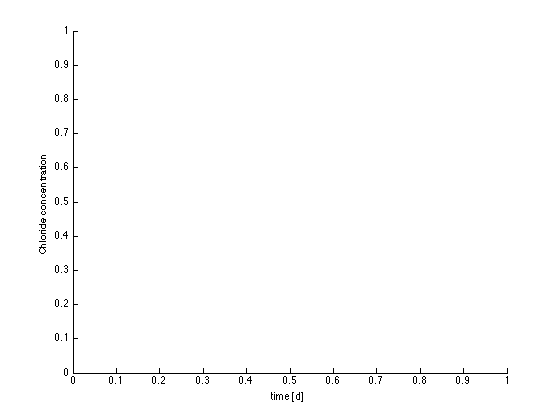
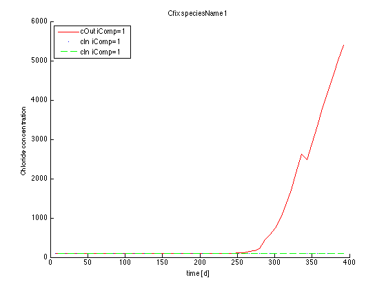
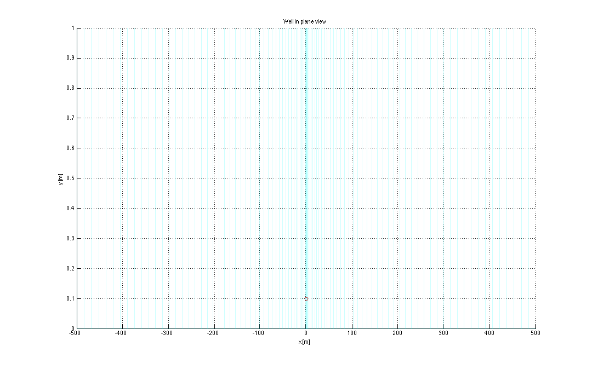
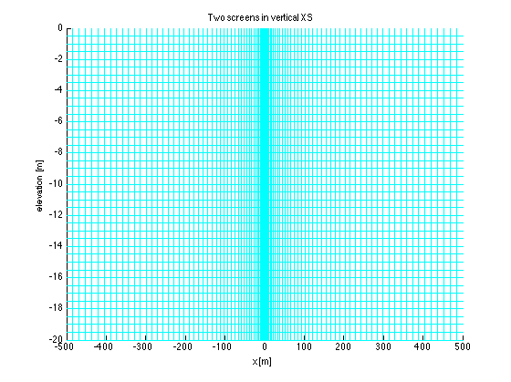

Tutorial wellObj
This tutorial shows some uses of the well object in modeling with mfLab. Objects are things that carry their own data, but share the behavior with other objects of the class to which they belong. This behvavior is implemented by methods, i.e. functions specific to the class to which the object belongs. Wells are ideal candidates for modeling them as objects.
TO 120504 130307
Contents
Basename is used to name all files of a problem in question; these files only differ in their extension
basename = 'wellObjTutorial';
Parameters
L = 500; % m half width of model D = 20; % m height and top of model Z0 = 0; % ground surface elevation above datum [m] kh = 30; % m/d hydraulic condictivity
Mesh/grid
x = sinespace(0,L,50,pi/2); xGr = [-x x]; zGr = [Z0:-0.5:Z0-D Z0-D]; yGr = [0 1]; gr=gridObj(xGr,yGr,zGr);
Generate other matrices using the gridObj/const method
HK = gr.const(kh);
Working with the well object
%%Generating (requesting) well objects % Well objects are generated by invoking their constuctor. % The constructor has has the same as the class, for wells wellObj. % The constructor is invoked with basename to allow % finding the workbook <<basename>>.xls, which holds the dynamic and static % information of the wells. % Static information (location etc) is to be found in the worksheet in this % workbook whose name is given as the second argument.
Generate well objects using worksheet 'wells' in workbook basename for fixed well data [x y z nr rw etc], [x y z nr] are obligatory.
well = wellObj(basename,'wells'); % inspect wells by typing well(1) to see the contentsof the first one. % Not that typing the a varialble like well(1) without a column is the same % display(well(1));
ans =
wellObj
Properties:
nr: 2
id: 2
name: 'well2'
longname: 'well2'
x: 0.1000
y: 0.1000
z: [-5 0]
rw: 0.2500
ztop: 0
ix: []
iy: []
idx: []
iLay: []
LRC: []
DZ: []
fQ: []
Dt: []
t: []
Q: []
C: []
Cout: []
NCOMP: []
species: []
parent: []
wpix: 2
whdl: [3x1 double]
ITYPE: 2
remark: ''
code: []
created: 7.3538e+05
FaceColor: 'w'
EdgeColor: 'b'
FaceAlpha: 1
EdgeAlpha: 1
marker: 'o'
UserData: [1x1 struct]
to see what pertinent well information is stored. Essential are [nr, x, y, z1, z2]. nr is essential to easily discern between wells to select some wells out of a large number. Invididual wells may be ignored by setting their nr to their equivalent negative value. x, y are the real-world coordiates and z1 and z2 respectively the bottom and the top of the well screen. Any other information can be added in additonal columns on this workbook.
These well have no notion of the grid yet. For that the constructor has to be called with the grid as third argument and the 3D array of the size of the model with Transmissivity or horizontal conductivity vlaues, so that an extraction can distributed over the cells that are penetrated by the well screen. Call the constructor with the grid and the horizontal conductivities
well = wellObj(basename,'wells',gr,HK); % inspect what's in the wells now.
How to add flows to the wells? These are obtained most easily by reading a column of flows for each well fromt the PER worksheet. This worksheet contains all data that pertain to stress periods and we need one value per well per stress period. Add the spreadsheet name 'PER' to indicate that flows are desired. A search will be done for columns Q1 Q2 Q3, in general Qn or Q_n with n the number of the well (well(iw).nr).
well = wellObj(basename,'wells',gr,HK,'PER');
inspect the well to see that it now contains time and flow. To use another prefix you may use {'PER' 'Flow'} for instance. Giving the worksheet and the prefix combined in a single cell argument. But then the worksheet PER must have columns Flow1 Flow2 etc. If only one column exists with the name of the prefix, then all wells will have the same flow, which they get from that single column. using other prefix, also present in the workhsheet.
well = wellObj(basename,'wells',gr,HK,{'PER','Flow'});
all wells use the same flow, there is only one column extraction in the workhsheet
well = wellObj(basename,'wells',gr,HK,{'PER','Extraction'});
because 'PER' is default, you can leave it out as well
well = wellObj(basename,'wells',gr,HK,'Extraction');
same but now also get the injection concentrations from the worksheet 'PER', looking for columns in sheet PER that refer to the concentration, of in this case 'temp': temp1 temp2 temp3 and Salinity1, Salinity2, Salinity3 for wells having well.nr 1, 2 and 3 respectively.
well = wellObj(basename,'wells',gr,HK,'PER',{'PER','Temp','Salinity'});
inspect well, see its flow, concentration and species
display(well(1));
ans =
wellObj
Properties:
nr: 2
id: 2
name: 'well2'
longname: 'well2'
x: [1x20 double]
y: [1x20 double]
z: [1x20 double]
rw: 0.2500
ztop: 0
ix: [50 50 50 50 50 50 50 50 50 50]
iy: [1 1 1 1 1 1 1 1 1 1]
idx: [932 834 736 638 540 442 344 246 148 50]
iLay: [10 9 8 7 6 5 4 3 2 1]
LRC: [10x3 double]
DZ: [1x10 double]
fQ: [1x10 double]
Dt: [1x56 double]
t: [1x56 double]
Q: [1x56 double]
C: [2x56 double]
Cout: [2x56 double]
NCOMP: 2
species: {'Temp' 'Salinity'}
parent: []
wpix: 2
whdl: [3x1 double]
ITYPE: 2
remark: ''
code: []
created: 7.3538e+05
FaceColor: 'w'
EdgeColor: 'b'
FaceAlpha: 1
EdgeAlpha: 1
marker: 'o'
UserData: [1x1 struct]
You are free to geneate wells first
well = wellObj(basename,'wells');
then then place them in the grid
well = well.setWell(gr,HK);
set the flows separately
well = well.getQ(basename,'PER');
set the injection concentrations separately
well = well.getCin(basename,{'PER','temp','salinity'});
% or, using the default sheet name 'PER'
well = well.getCin(basename,{'temp','salinity'});
An individual well object can be generated independent of the grid by directly calling the wellObj constructor
nr=39; x=100; y=0.2; z=[-10 -20]; rw=0.3; mywell = wellObj(nr,x,y,z(1),z(2),rw);
Displaying this new well shows that it does not have any grid information, contrary to the wells obtained above, which have been obtained through the gridObj/well method.
display(mywell);
mywell =
wellObj
Properties:
nr: 39
id: 39
name: 'Well039'
longname: ''
x: 100
y: 0.2000
z: [-10 -20]
rw: 0.3000
ztop: 0
ix: []
iy: []
idx: []
iLay: []
LRC: []
DZ: []
fQ: []
Dt: []
t: []
Q: []
C: []
Cout: []
NCOMP: []
species: []
parent: []
wpix: 2
whdl: [3x1 double]
ITYPE: 2
remark: ''
code: []
created: 7.3538e+05
FaceColor: 'w'
EdgeColor: 'b'
FaceAlpha: 1
EdgeAlpha: 1
marker: 'o'
UserData: []
One can add grid information and flow information by calling the same method gridOjb/well, but this time with the actual well object(s) as third argument instead of the name of the spreadsheet with the well information.
mywell = wellObj(basename,mywell,gr,HK);
Inspecting wells
The general contents of the wells in a list can be inspected by calling the name of the array with wells:
display(well);
well =
2x1 wellObj
Properties:
nr
id
name
longname
x
y
z
rw
ztop
ix
iy
idx
iLay
LRC
DZ
fQ
Dt
t
Q
C
Cout
NCOMP
species
parent
wpix
whdl
ITYPE
remark
code
created
FaceColor
EdgeColor
FaceAlpha
EdgeAlpha
marker
UserData
that of an invididual well by specifying its index:
well(2)
ans =
wellObj
Properties:
nr: 3
id: 3
name: 'well3'
longname: 'well3'
x: [1x20 double]
y: [1x20 double]
z: [1x20 double]
rw: 0.2500
ztop: 0
ix: [50 50 50 50 50 50 50 50 50 50]
iy: [1 1 1 1 1 1 1 1 1 1]
idx: [3872 3774 3676 3578 3480 3382 3284 3186 3088 2990]
iLay: [40 39 38 37 36 35 34 33 32 31]
LRC: [10x3 double]
DZ: [1x10 double]
fQ: [1x10 double]
Dt: [1x56 double]
t: [1x56 double]
Q: [1x56 double]
C: [2x56 double]
Cout: [2x56 double]
NCOMP: 2
species: {'temp' 'salinity'}
parent: []
wpix: 2
whdl: [3x1 double]
ITYPE: 2
remark: ''
code: []
created: 7.3538e+05
FaceColor: 'w'
EdgeColor: 'b'
FaceAlpha: 1
EdgeAlpha: 1
marker: 'o'
UserData: [1x1 struct]
These wells clearly know their prosition in the grid (Ix,Iy,Iz,Idx,LRC). LRC stands for the 3-column vector of layer row column indices as required by all BCN (boundary conditions) packages like WEL, RIV, GHB, CHD, DRN ... In general, a screen intersects than one model layer. While well.ix and well.iy are both only 1 long, Iz and LRC may have lengths greater than one. idx, is the global index in the grid, i.e. it is computed as:
idx = gr.Nx*gr.Ny*(well(1).iLay(1)-1)+gr.Ny*(well(1).ix-1)+well(1).iy; display(idx);
idx = 932 932 932 932 932 932 932 932 932 932
display(well(1).idx);
ans = 932 834 736 638 540 442 344 246 148 50
This inspection also shows the fQ field, i.e the fraction of the extraction from each of the penetrated cells
display(well(1).fQ);
ans =
Columns 1 through 8
0.1000 0.1000 0.1000 0.1000 0.1000 0.1000 0.1000 0.1000
Columns 9 through 10
0.1000 0.1000
After the call by gr.well, the wells have obtained their flow information for all stress periods
display(well(1).Q);
ans =
Columns 1 through 13
0 0 0 0 0 0 0 0 0 0 0 0 0
Columns 14 through 26
0 0 0 0 0 0 0 0 0 0 0 -1 -1
Columns 27 through 39
-1 -1 -1 -1 -1 -1 -2 -2 -2 -2 -2 -2 -2
Columns 40 through 52
-2 -4 -4 -4 -4 -4 -4 -4 -4 -2 -2 -2 -2
Columns 53 through 56
-2 -2 -2 -2
Because the length of stress periods generally varies, it is necessary to store it along with the flow information, allow computing mass rates and to integrate over time.
display(well(1).t);
ans =
Columns 1 through 13
7 14 21 28 35 42 49 56 63 70 77 84 91
Columns 14 through 26
98 105 112 119 126 133 140 147 154 161 168 175 182
Columns 27 through 39
189 196 203 210 217 224 231 238 245 252 259 266 273
Columns 40 through 52
280 287 294 301 308 315 322 329 336 343 350 357 364
Columns 53 through 56
371 378 385 392
display(well(1).Dt);
ans =
Columns 1 through 13
7 7 7 7 7 7 7 7 7 7 7 7 7
Columns 14 through 26
7 7 7 7 7 7 7 7 7 7 7 7 7
Columns 27 through 39
7 7 7 7 7 7 7 7 7 7 7 7 7
Columns 40 through 52
7 7 7 7 7 7 7 7 7 7 7 7 7
Columns 53 through 56
7 7 7 7
Method gridObj/well retrieved the flow extracted by each well from the worksheet PER looking for headers Q_1, Q_2... Q_n with as indices the well numbers. If more wells have the same number, they all use the same flow information associated qirh that number. This is usefull when dealing with well series. The property wellObj.id may be used next to the property wellObj.nr to identify individual wells. Moreover, one may also use the field wellObj/remark for like objectives, such as adding ZIPcode to each well.
The wells may also carry their injection concentration.
display(well(1).C);
ans = Columns 1 through 13 100 100 100 100 100 100 100 100 100 100 100 100 100 200 200 200 200 200 200 200 200 200 200 200 200 200 Columns 14 through 26 100 100 100 100 100 100 100 100 100 100 100 100 100 200 200 200 200 200 200 200 200 200 200 200 200 200 Columns 27 through 39 100 100 100 100 100 100 100 100 100 100 100 100 100 200 200 200 200 200 200 200 200 200 200 200 200 200 Columns 40 through 52 100 100 100 100 100 100 100 100 100 100 100 100 100 200 200 200 200 200 200 200 200 200 200 200 200 200 Columns 53 through 56 100 100 100 100 200 200 200 200
The wells obtain this information form the worksheet PER by searching for the columns named Cn_m, where n is the well number and m is the species number. If only one species is used, headers C_1, C_2 C_3 .. C_n or headers C1 C2 C3 ... Cn are also acceptable. But with more than one species, the header must have this form C1_1,C_2, C_3, C2_1, C2_2, C2_3, with two wells and three species in this case. The well number comes first, the species number second. As before, wells that have the same number will grab the concentration from the same columns in the PER sheet. Look at the injection concentration for well 1
display(well(1).C);
ans = Columns 1 through 13 100 100 100 100 100 100 100 100 100 100 100 100 100 200 200 200 200 200 200 200 200 200 200 200 200 200 Columns 14 through 26 100 100 100 100 100 100 100 100 100 100 100 100 100 200 200 200 200 200 200 200 200 200 200 200 200 200 Columns 27 through 39 100 100 100 100 100 100 100 100 100 100 100 100 100 200 200 200 200 200 200 200 200 200 200 200 200 200 Columns 40 through 52 100 100 100 100 100 100 100 100 100 100 100 100 100 200 200 200 200 200 200 200 200 200 200 200 200 200 Columns 53 through 56 100 100 100 100 200 200 200 200
In case the well is not active during any stress period, its flow value is either 0 or NaN. NaN means, in fact, that the well does not yet exist or has been dismantled. Zero means that the well is off during stress periods in question. However, the length of flow (and concentration) values, including zeros and NaNs must be NPER, the number of stress periods. This is guaranteed when obtaining the information from the PER worksheet.
The extraction concentration has to be computed by the model, or, after the simulation, by the user. Given the computed concentration, C, as obtained by readMT3D (see help readMT3D) we can add this concentration by calling the method well/cOut
C = readMT3D('MT3D001.UCN'); % read conc computed by example swt_v4/FSSE/FSSE iComp=1; well = well.setCout(C,iComp); % requires C as output of MT3DMS
Reading MT3DMS binary output file <<MT3D001.UCN>> verbose= 0 Scanning headers... .........................finished, 2240 records read File contains the following: Number of records in file : 2240 Number of stress periods : 56 Number of time steps : 10 Highest time in file : 392 Number of times in file : 56 Number of layers : 40 Number of Rows : 1 Number of columns : 98 ...................... 2240 records read. . 56 records in output struct.
Plotting the output concentration of the well over time is also possible. This works for all wells simultaneously, no looping is required.
figure; hold on; xlabel('time [d]'); ylabel('Chloride concentration');
The compoment number is necessary as the function has no means of guessing which of the components is meant, unless the model deals with one compoment only. mfLab simply requires iComp to be given in any case.
well(1).plotCout(iComp,'r'); leg{1}='cOut iComp=1'; well(1).plotCin( iComp,'b.','linewidth',2); leg{2}='cIn iComp=1'; well(1).plotC( iComp,'g--'); leg{3}='cIn iComp=1'; legend(leg,2);
Other methods of the well object
Click the blue word "methods" to show which methods have been defined for the wellObj class implementing behavior shared by all well objects.
To plot the wells in the xyplane
figure; hold on; xlabel('x [m]'); ylabel('y [m]'); title('Well in plane view'); gr.plotGrid('c'); well.plotXY('ro');
To plot the wells on a cross section
figure; hold on; title('Two screens in vertical XS'); xlabel('x [m]'); ylabel('elevation [m]'); set(gca,'xlim',gr.xGr([1 end])); gr.plotXS('c'); well.plotXS('r'); % use well.plotYS to plot in the Y-cross section.
If the grid is changed so that all well-grid data needs to be updated, repeat this call
%well.wetWell(grNew,HKnew); % New grid --> also a new HK
This call does not affect the dynamic flow information that the well objects already carry, nor does it affect the already stored concentrations. The outflow concentrations should be updated, however, using the method well.cOut as explained before.
% TO 120523 130307